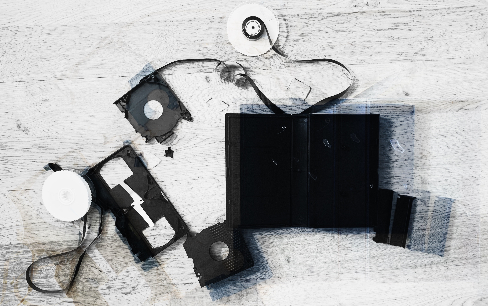

Temper Trauma (2022) was part of the Digital Arts Computing exhibition, Ephemerence. For this installation, I used capacitive sensors, Arduino, Processing, music platforms, and various objects. This work was an interactive piece where a set of objects are scattered out on the floor. The audience was invited to touch the objects, triggering a unique corresponding sound.
While creating this piece, I was constantly reliving memories, which allowed me to become conscious of my past selves. Through achieving a better understanding of my past, it will allow for a process in the direction of healing.